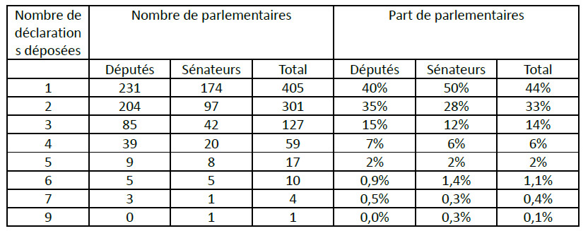

QU’EST-CE QU’INTEGRITY WATCH ?
1) Objectif de l’outil
Integrity Watch vise à renforcer la transparence et la redevabilité des acteurs publics et privés ainsi qu’à prévenir les conflits d’intérêts en facilitant l’exercice d’un contrôle citoyen. L’objectif est de mettre à disposition de tous et de façon intelligible des données publiques existantes. L’outil a vocation à être enrichi dans les mois et années qui viennent avec de nouveaux jeux de données (futur registre des déports au Parlement, registre des représentants d’intérêts, agendas publics des élus, etc.), pour devenir à terme un véritable outil citoyen de prévention des conflits d’intérêts.
Transparency International France est une association agréée par la HATVP et peut la saisir pour toute question relative aux lois sur la transparence : déclarations d’intérêts et de patrimoine incomplètes, conflits d’intérêts, incompatibilités non respectées, pantouflages problématiques… Transparency International France invite dès lors tous les citoyens à exercer leur droit de regard et à lui faire part de tout manquement constaté par le biais de ce formulaire dédié.
Integrity Watch a été lancé en octobre 2014 par Transparency International UE (TI EU). Le projet est co-financé par l’Open Society Initiative for Europe (OSIFE), avec une contribution de la Fondation Roi Baudouin (FRB). Integrity Watch France est cofinancé avec le soutien de la Commission européenne. Le contenu de cette plateforme numérique représente uniquement les vues de l’auteur, à qui incombe l’unique responsabilité. La Commission européenne ne saurait être tenue responsable de l’utilisation qui pourrait être faite des informations contenues sur cette plateforme.


Création du site: Chiara Girardelli - Tech To The People - Latte Creative
Integrity Watch est un projet open source (https://github.com/tttp/iw-fr).
2) Historique du projet
Depuis le 11 octobre 2013, la loi sur la transparence de la vie publique oblige les parlementaires à publier leur déclaration d’intérêts auprès de la HATVP. Cette disposition correspond à une recommandation ancienne de Transparency International France.
La première version d’Integrity Watch France portait sur la XIV législature (2012-2017) et avait permis de visualiser numériquement les premières déclarations d’intérêts. Ces déclarations avaient été effectuées à la main et n’étaient pas exploitables sans un fastidieux processus de saisie manuelle des données. L’outil s’était notamment intéressé aux revenus liés aux activités annexes des parlementaires. Sur les 925 parlementaires, nous avions ainsi identifié 1 987 activités exercées en parallèle du mandat parlementaire, générant un total de 19,8 millions d’euros par an. Integrity Watch avait également permis d’évaluer l’étendue de la pratique des emplois familiaux par les parlementaires : 14% des sénateurs et députés employaient un collaborateur ayant le même patronyme qu’eux.
Ces enseignements ont été intégrés dans les recommandations de Transparency International France, et ont nourri notre plaidoyer. L’association s’est mobilisée lors de la préparation de la loi pour la confiance dans la vie politique promulguée le 15 septembre 2017, et a obtenu que des réformes importantes soient adoptées : interdiction pour les députés et sénateurs de recruter dans leur équipe parlementaire leurs conjoints, ascendants, descendants et conjoints de ceux-ci, obligation de déclarer tout autre lien de parenté (cousin, neveu, beau-frère, etc.), meilleur encadrement des activités de conseil et de lobbying exercées par les parlementaires en parallèle à leur mandat.
Grâce à un décret de mai 2016 les données sont désormais disponibles en Open Data, et téléchargeables sur le site de la HATVP.
En savoir plus :
Integrity Watch sous la XIVème législature (2012-2017)
Rapport pour un parlement exemplaire (Mai 2017)
Recommandations de Transparency International France pendant les débats parlementaires relatifs à la loi rétablissant la confiance dans la vie politique.
3) Limites intrinsèques de l’outil
Integrity Watch se base sur les données disponibles en open data sur le site de la HATVP au 31/01/2019, de l’Assemblée nationale et du Sénat. Par conséquent, les informations présentées dans l’outil dépendent de la qualité des déclarations transmises par les parlementaires. Or, celles-ci sont souvent insuffisamment actualisées (cf infra). Si vous constatez une erreur ou un manquement, vous pouvez nous en faire part via ce formulaire dédié.
4) REMARQUES A L’INTENTION DES DEPUTES ET SENATEURS
Integrity Watch est un outil développé par Transparency International qui a vocation à présenter aux citoyens les déclarations d’intérêts des parlementaires, dans un objectif de prévention des conflits d’intérêts. Integrity Watch reprend le contenu des déclarations d'intérêts telles que disponibles en ligne au 31/01/2019, telles qu’elles ont été transmises à la HATVP. Nous ne procédons à aucun retraitement manuel. Il appartient à chaque parlementaire de veiller à ce que les déclarations soient conformes aux exigences légales et correctement actualisées. Transparency International France ne saurait être tenue responsable d’éventuelles erreurs sur les données publiées, et vous invite le cas échéant à effectuer une déclaration modificative auprès de la Haute Autorité pour la Transparence de la Vie Publique afin que ces nouvelles données soient intégrées dans la prochaine actualisation d’Integrity Watch. Les erreurs les plus fréquemment rencontrées concernent les activités conservées des parlementaires, l’identité et les activités annexes des collaborateurs parlementaires, et les activités des conjoints. Les parlementaires peuvent se référer au guide du déclarant disponible sur le site de la HATVP : https://www.hatvp.fr/wordpress/wp-content/uploads/2018/04/guide-du-declarant-avril-2018.pdf
Une version béta de la version actualisée d’Integrity Watch vous a été envoyée en Juillet 2018, pour vous donner l’opportunité si nécessaire de mettre à jour vos déclarations. Pour toute question sur notre démarche, vous pouvez nous contacter : integritywatch@transparency-france.org
COMMENT INTERPRETER LES DONNEES ?
1) SOURCES
- Le contenu des déclarations d’intérêts des parlementaires publiées par la Haute Autorité pour la transparence de la vie publique (HATVP).
- Les informations sur les députés et sénateurs disponibles sur les sites et portails open data de l’Assemblée nationale et du Sénat.
Le contenu des déclarations d’intérêts est fixé par décret (décret n°2013-1212 du 23 décembre 2013 annexe 3), et détaillé par la HATVP dans son “guide du déclarant”.
Transparency International a tenu à partager, avant publication, une version cachée du projet XV législature avec les parlementaires afin que ces derniers puissent vérifier leurs informations et, en cas d’inexactitude, transmettre à la HATVP une déclaration de modification. Transparency International espère ainsi qu’Integrity Watch contribuera à améliorer la qualité des données fournies par les parlementaires.
2) Appartenances politiques
S’agissant des appartenances politiques, Integrity Watch utilise les partis politiques auxquels se sont rattachés les députés et sénateurs dans le cadre de la législation sur le financement de la vie politique. Ce rattachement a des conséquences financières pour le parti politique de rattachement, qui bénéficie d’un financement public proportionnel au nombre de parlementaires affiliés (en savoir plus).
Le parti politique de rattachement diffère parfois du groupe parlementaire auquel appartient le député ou le sénateur. C’est notamment le cas pour les partis qui n’ont pas suffisamment de parlementaires pour constituer un groupe parlementaire autonome (il faut au minimum 15 députés ou 10 sénateurs pour pouvoir former un groupe). Ils peuvent alors s’accorder avec un groupe existant pour le rejoindre.
A terme, Integrity Watch pourra être enrichi avec des données relatives aux partis politiques et au financement des campagnes.
3) ACTIVITÉS ANNEXES CONSERVÉES DES PARLEMENTAIRES
Pour calculer le nombre total d’activités annexes, ont seulement été additionnées les activités explicitement indiquées par les parlementaires dans leurs déclarations d’intérêts comme « conservées ». Elles correspondent aux :
- Activités professionnelles donnant lieu à rémunération ou gratification
- Activités de consultant
- Participations aux organes dirigeants d’un organisme public ou privé ou d’une société
- Fonctions bénévoles susceptibles de faire naître un conflit d’intérêts
Les informations concernant les activités conservées ou non par les parlementaires sont visibles sur les fiches individuelles de chaque parlementaire. Le lien vers la déclaration en ligne sur le site de la HATVP permet de consulter les éléments déclarés dans leur intégralité.
La version initiale d’Integrity Watch, portant sur la XIVè législature (2012-2017), contenait des données chiffrées sur les revenus tirés de ces activités annexes. Ces données sont essentielles : elles contribuent notamment à apprécier l’intensité d’un éventuel conflit d’intérêts. Nous avons fait le choix de ne pas les intégrer à ce stade dans notre plateforme. En effet, la loi exige des parlementaires qu’ils renseignent leurs revenus tirés de leurs activités des cinq années précédentes. Sous la quatorzième législature, les déclarations d’intérêts avaient été remplies en 2014, et fournissaient donc d’emblée des données sur les revenus des parlementaires en 2013 (année parlementaire pleine), en marge de leur mandat. Sous cette législature, les déclarations ont été effectuées dans la foulée des élections de 2017 : les parlementaires ont alors déclaré leurs revenus passés des cinq dernières années, mais pas leurs revenus conservés. Nous avons estimé que les données que nous pourrions présenter ne seraient pas suffisamment représentatives pour offrir des éléments d’analyse et de comparaison pertinents à ce stade.
Toutefois, ces données chiffrées relatives aux revenus tirés des activités annexes ont vocation à réapparaître dans une prochaine actualisation d’Integrity Watch. En effet, selon le guide du déclarant de la HATVP, “les rémunérations, indemnités et gratifications perçues doivent être déclarées sur une base annuelle, que ce soit en brut ou en net, pour les cinq années précédant le fait générateur de la déclaration” mais, à ce jour, moins de la moitié des parlementaires ayant déclaré avoir conservé une activité ont mis à jour leur déclaration en 2018 ou 2019. D’ici la prochaine actualisation d’Integrity Watch, Transparency va contacter les parlementaires concernés pour vérifier auprès d’eux si une mise à jour de leur déclaration est nécessaire et, le cas échéant, les inviter à le faire.
4) DÉTENTION DE PARTICIPATIONS FINANCIÈRES
Depuis la loi de confiance 2013, les parlementaires ont l’obligation de déclarer les participations financières directes qu’ils détiennent dans le capital d'une société à la date de la nomination.
Integrity Watch reprend donc les données de cette rubrique au sein de la déclaration d’intérêt des parlementaires à la HATVP.
Les données concernant les revenus tirés de ces participations financières se heurtent toutefois aux mêmes écueils que celles concernant les revenus tirés des activités annexes des parlementaires (cf supra).
5) ACTIVITÉS ANNEXES DES COLLABORATEURS PARLEMENTAIRES
Toute déclaration d’intérêt doit renseigner le nom des collaborateurs parlementaires, et le cas échéant les activités annexes occupées par ceux-ci. Selon le dernier rapport de la déontologue de l’Assemblée nationale, 40% des collaborateurs parlementaires sont à temps partiel, et une part substantielle d’entre eux exercent une autre activité en parallèle. Ces données sont utiles pour appréhender les éventuels conflits d’intérêts associés à ces activités parallèles.
Pour autant, la qualité des données disponibles en open data est là encore insuffisantes. Elles sont tout d’abord incomplètes dans de nombreuses déclarations : en comparant les déclarations avec les données fournies par ailleurs par l’Assemblée nationale et le Sénat, il apparait que les noms des collaborateurs parlementaires ne sont pas à jour.
En outre, les déclarations sont parfois mal remplies. Il n’est pas rare qu’un collaborateur n’ait pas d’activité annexe mais que le parlementaire remplisse à tort la case réservée aux déclarations d’activités annexes en écrivant une formule du type “collaborateur à temps plein, sans autre activité professionnelle”. Ces problèmes peuvent paraître anodins, mais ils ont pour conséquence qu’il n’est pas possible d’interpréter les données sans retraitement manuel : on perd alors tout l’intérêt de l’open data.
Le guide du déclarant de la HATVP fournit pourtant des précisions sur ce point : “Tous les collaborateurs employés par le parlementaire doivent être déclarés, qu’ils soient employés à Paris ou en circonscription. (…) Les activités que le collaborateur exerce pour votre compte ne sont pas demandées. En revanche, si votre collaborateur travaille également pour un autre parlementaire, pour un groupe politique, pour un parti politique ou pour une collectivité, il convient de le mentionner. Toute modification affectant cette rubrique (fin de fonction, nouveau recrutement ...), doit faire l’objet d’une déclaration modificative. » Dans son dernier rapport, “la Déontologue suggère qu’une meilleure information soit fournie aux députés sur la manière de renseigner leur déclaration d’intérêts et d’activités afin de compléter utilement la rubrique consacrée aux activités professionnelles exercées par leurs collaborateurs parallèlement à leurs fonctions auprès du député.”
Le turnover au sein des équipes parlementaires devrait donc être un levier pour l’actualisation régulière des déclarations d’intérêts.
6) Date de dépôt de la dernière déclaration
Les parlementaires doivent déposer une première déclaration d’intérêts et d'activité dans les deux mois suivant leur élection. A chaque modification substantielle de leurs intérêts et activités, ils doivent déposer une déclaration modificative (“diam”).
7) Pourquoi certaines données ne sont pas disponibles en open data ?
Dans certains cas, le problème est temporaire : il s’agit de parlementaires entrés récemment en fonction (exemple : suppléant d’un député venant d’être nommé au gouvernement) qui n’ont pas encore effectué de déclaration d’intérêts. Pour savoir si le parlementaire a actualisé sa déclaration depuis la dernière mise à jour d’Integrity Watch (données au 31/01/2019), vous pouvez consulter le site de la HATVP (lien disponible dans la page individuelle du parlementaire sur Integrity Watch).
Dans d’autres cas, il s’agit de déclarations effectuées en 2015, et remplies à la main, antérieurement au décret rendant obligatoire de remplir les déclarations en ligne. Seule la version scannée de ces déclarations est disponible sur le site de la HATVP.
8) Pourquoi l’outil ne se concentre que sur les parlementaires ?
Les parlementaires ne sont effectivement pas les seuls élus dont les déclarations d’intérêts sont rendues publiques. La HATVP abrite également les déclarations des membres du gouvernement, des eurodéputés et de certains élus locaux.
Integrity Watch a vocation à être enrichi pour intégrer leurs données.
PRINCIPAUX ENSEIGNEMENTS
La qualité des déclarations d’intérêts est insuffisante pour exploiter les données sans un important retraitement manuel :
- Pour 54 sénateurs, soit plus de 15% des membres de la Chambre Haute, il n’existe pas de données en open data, car leurs déclarations d’intérêts ont été effectuées en 2015, ou du moins avant le décret du 11 mai 2016 rendant obligatoire le recours au téléservice de la HATVP. Parmi ces déclarations, beaucoup ne sont pas à jour et devraient donc être actualisées.
- Les données relatives aux revenus tirés des activités annexes et des participations financières ne sont pas suffisamment actualisées. Seuls 44% des parlementaires (52% des députés et 29% des sénateurs) ont actualisé leurs déclarations au moins une fois en 2018 ou 2019. Parmi les 110 parlementaires déclarant au moins cinq activités annexes, seuls 55 (50%) ont actualisé leur déclaration au moins une fois en 2018 ou 2019.
- 167 parlementaires ont actualisé leur déclaration d’intérêts en janvier 2019 (26% des députés et 5% des sénateurs), dont les deux-tiers postérieurement à la publication d’une étude extérieure au Parlement, pointant les insuffisances des déclarations.
- S’agissant des activités annexes des collaborateurs parlementaires, une analyse manuelle des fiches des parlementaires ayant déclaré au moins 5 activités annexes dans leur équipe parlementaire (48 cas) montre que le chiffre est le bon dans seulement 3 cas (6%). Les autres fiches ne sont pas correctement remplies sur la forme et les données ne peuvent être exploitées automatiquement sans retraitement manuel. Ces problèmes de forme sont un frein à l’analyse de fond.
Attention cependant aux interprétations hâtives : ce défaut d’actualisation masque des réalités différentes, qui ne sont pas toutes du même niveau de gravité et ne peuvent raisonnablement être mises sur le même plan. Cela traduit la nécessité d’améliorer l’information des députés sur leurs obligations déclaratives, afin de garantir leur correcte actualisation.
- Les parlementaires déclarent en moyenne 2,3 activités annexes (activités rémunérées et activités bénévoles confondues), un chiffre sensiblement proche de celui observé sous la quatorzième législature (2,15).
- Un tiers des parlementaires déclarent détenir des participations financières. Seule la moitié d’entre eux (53%) ont actualisé leur déclaration en 2018 ou 2019.
- En moyenne, les parlementaires ont déposé deux déclarations (soit une déclaration initiale et une déclaration modificative). 40% des députés et 50% des sénateurs n’ont pas déposé de nouvelle déclaration après leur déclaration initiale. A l’inverse, un sénateur a déposé jusqu’à neuf déclarations.

PRINCIPALES RECOMMANDATIONS
-
Améliorer la qualité et la mise à jour des déclarations d'intérêts et d'activités des parlementaires, au besoin en modifiant la loi du 11 octobre 2013 et/ou le décret du 23 décembre 2013 :
- Clarifier le fait que les revenus tirés des activités annexes doivent être déclarés sur une base au moins annuelle. Ce système de déclaration annuelle permettrait de s’assurer d'une meilleure actualisation de ces données.
- Améliorer l’information des parlementaires sur leurs obligations déclaratives. Les services du Parlement en charge de la gestion administrative des contrats de travail des collaborateurs parlementaires pourraient par exemple prévoir d’adresser systématiquement une information aux parlementaires lorsque ceux-ci recrutent ou se séparent d’un collaborateur et/ou la HATVP pourrait prévoir d’adresser chaque année un rappel aux parlementaires.
- Associer un numéro SIREN/SIRET aux entreprises et organisations mentionnées dans la déclaration, afin de faciliter le traitement statistique, et - à terme - le croisement des données avec d’autres bases de données, notamment le registre des représentants d’intérêt de la HATVP.
- Améliorer le système de télédéclaration afin de minimiser le risque de mauvais remplissage, afin que les problèmes de forme ne constituent pas un frein à l’analyse des données.
-
Pour renforcer l’exemplarité du Parlement de manière générale, Transparency International France a publié en mai 2017 un rapport contenant des recommandations relatives aux frais de mandat, au statut des collaborateurs parlementaires, et au renforcement de la déontologie. Parmi ces recommandations :
- Mettre en place rapidement le registre des déports, prévu par la loi pour la confiance dans la vie politique de septembre 2017.
- Plafonner les revenus annexes des parlementaires.
- Assurer le contrôle effectif et la transparence des frais de mandat des parlementaires.
- Améliorer le statut des collaborateurs parlementaires.
- Renforcer l’indépendance et les moyens des organes de déontologie.
- Inciter les parlementaires à faire la transparence sur leurs agendas.
COMMENT CONTRIBUER A CE PROJET ?
En 2019 et 2020, Integrity Watch va s’enrichir progressivement avec de nouvelles fonctionnalités et de nouvelles données, pour devenir à terme un véritable outil de prévention des conflits d’intérêts. Pour y parvenir, nous aurons besoin de vous ! Pour nous rejoindre, envoyez simplement un mail avec quelques lignes pour vous présenter : integritywatch@transparency-france.org.
Si vous avez des compétences en informatique, vous pourrez nous aider à développer la plateforme et à analyser les données. Si vous habitez autour de Paris et/ou si vous êtes familier du milieu de la civic tech, vous pourrez nous aider à organiser un “hackathon” (évènement collaboratif) à l’automne prochain. Si vous constatez des irrégularités dans les déclarations, signalez-les nous via ce formulaire dédié. Si vous aimez le projet mais n’avez pas beaucoup de temps à y consacrer, vous pouvez nous aider à le diffuser en en parlant autour de vous.
NOUS CONTACTER
integritywatch@transparency-France.org
+33 (0) 1 84 16 94 68
Contact presse : Anne.boisse@transparency-france.org
Contact élus et décideurs publics : elsa.foucraut@transparency-france.org